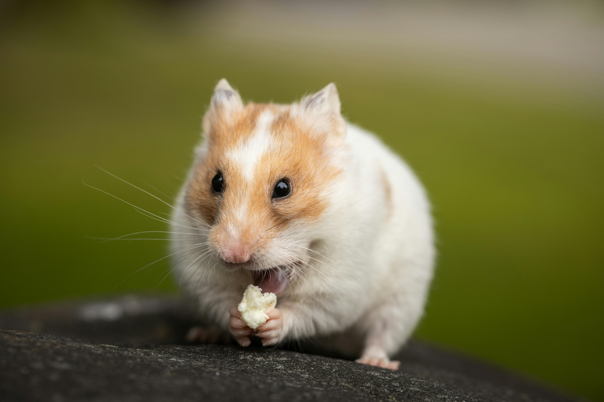

Caring for Small Animals
Small Animal Care Guide
Small animals require special housing, proper food, and social interaction.
Housing Needs
Cages should be spacious, with proper ventilation and safe bedding materials.
Diet
Each species has different dietary needs. Guinea pigs need vitamin C-rich food, while hamsters enjoy grains and seeds.
Health & Socialization
Some small pets thrive in pairs, while others prefer solitude. Regular vet checkups ensure a long, happy life.
